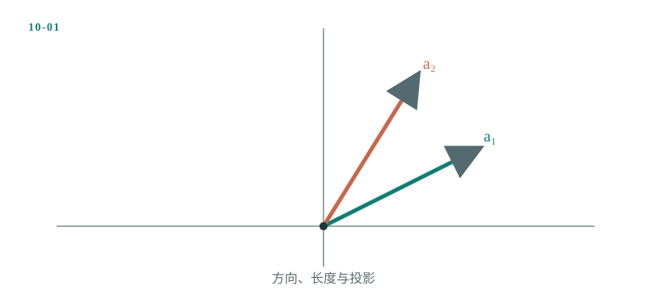
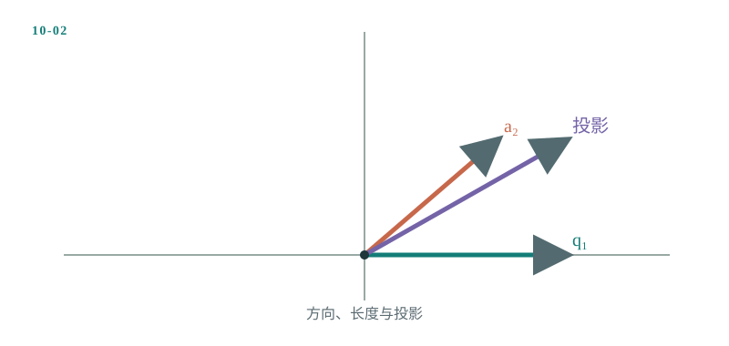
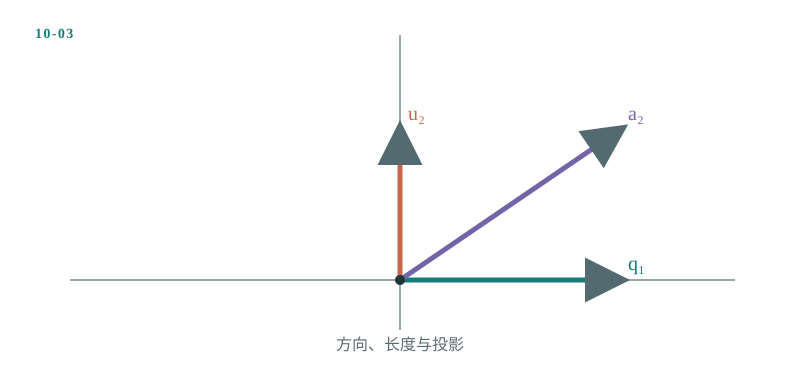
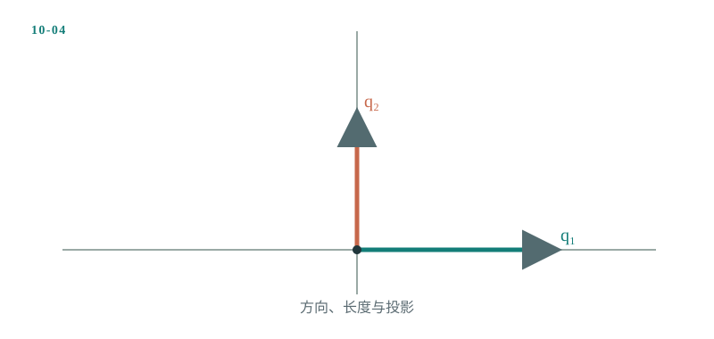
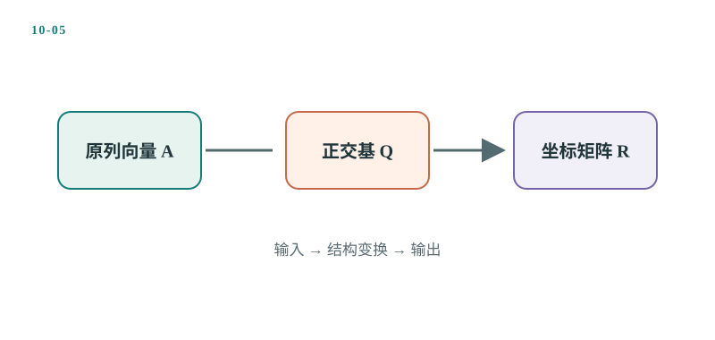
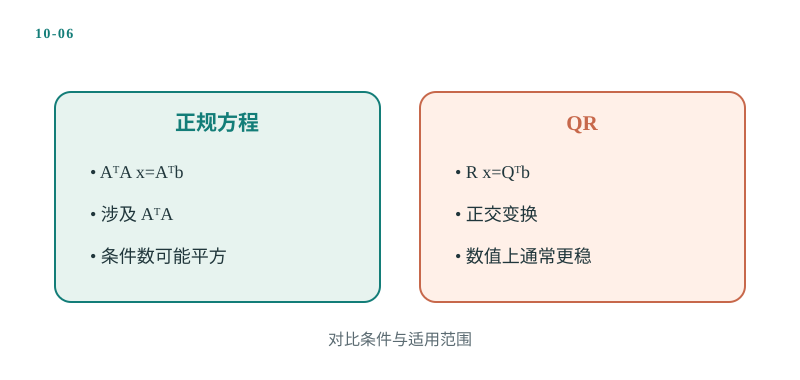
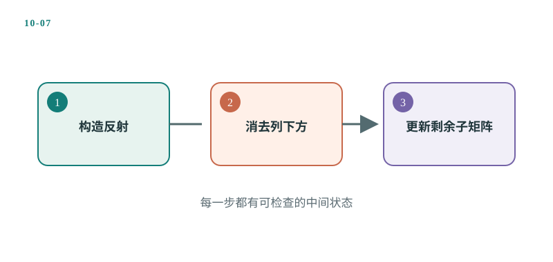

QR 分解：把列向量变成正交坐标
一组向量通常不垂直，但我们可以把它们重新表达成一组正交单位向量。QR 分解把这件事写成 A = QR。
01问题：列向量不垂直，坐标就不独立
把矩阵 A 看成一组列向量。若这些列彼此倾斜，投影、最小二乘和求坐标都要处理交叉项。QR 的目标不是改变 A 张成的列空间，而是找一组正交单位列向量 Q，仍然张成同一个空间。
剩下的系数关系被放入上三角矩阵 R。于是 A=QR：Q 描述几何方向，R 描述原列向量如何由这些方向组合而成。

02第一步：把第二个向量投影到第一个方向
令 a₁=(1,1,0)，a₂=(1,0,1)。先把 a₁ 归一化为 q₁。再计算 a₂ 在 q₁ 上的投影系数 r₁₂=q₁ᵀa₂，投影向量为 r₁₂q₁。
投影只提取 a₂ 中沿 q₁ 的部分；它把 a₂ 分解成沿 q₁ 的分量和垂直于 q₁ 的剩余部分。

03第二步：减去投影，得到正交残差
把投影从 a₂ 中减去，得到 u₂=a₂−(q₁ᵀa₂)q₁。根据投影公式，q₁ᵀu₂=q₁ᵀa₂−(q₁ᵀa₂)q₁ᵀq₁=0，因为 q₁ 已经是单位向量。
正交不是看图猜出来的，而是由点积严格等于 0 推出的。

04第三步：归一化，得到 q₂
本例 u₂=(1/2,−1/2,1)，长度为 √6/2，因此 q₂=(1,−1,2)/√6。现在 q₁ 与 q₂ 都是单位向量，而且互相垂直。
如果 u₂=0，说明 a₂ 已经落在前面向量的张成空间里，列向量线性相关；此时不能把零向量归一化。

05R 从哪里来：把原列向量重新组合
每个原列向量 aⱼ 都可以写成前面正交基向量的线性组合。系数 rᵢⱼ=qᵢᵀaⱼ，只有 i≤j 的系数可能非零，所以 R 是上三角矩阵。
对本例，r₁₁=√2，r₁₂=1/√2，r₂₂=√6/2。将 Q 与 R 相乘会逐列恢复原矩阵 A。

06最小二乘：QR 把问题变成上三角求解
对满列秩 A，最小化 ‖Ax−b‖₂。写 A=QR，并利用 Q 的列正交，可将 b 分成列空间内的投影 Q Qᵀb 与正交残差。最优解满足 R x=Qᵀb。
本例取 b=(1,2,0)，得到 x=(5/3,−1/3)。残差 r=b−Ax=(-1/3,1/3,1/3)，并且 Aᵀr=0。

07交互：改变观测值，观察正交坐标解
固定 A 的两列，改变 b 的第一个坐标。交互区使用已经推导出的 Q、R，先计算 Qᵀb，再回代解 R x=Qᵀb。
经典 Gram–Schmidt 在列向量接近相关时可能损失正交性；Modified Gram–Schmidt 与 Householder QR 通常更适合可靠的数值实现。

QR 最小二乘实验
固定 a₁=(1,1,0)、a₂=(1,0,1)，改变 b=(t,2,0)。
x=(1.667,-0.333)
Aᵀr=(0,0)
08数值边界与自测
若 A 列满秩，Q 可以取 m×n 且 QᵀQ=Iₙ；若列不满秩，必须处理秩亏。对方阵且可逆时 Q 是正交方阵，R 对角线非零。QR 不要求 A 对称，也不要求 A 是方阵。
Householder 反射通过一系列正交变换把 A 化成上梯形形式，通常比朴素 Gram–Schmidt 更稳定。
自测与思考
如果第二列恰好是第一列的两倍，Gram–Schmidt 的 u₂ 会是什么？为什么这意味着列空间维数没有增加？
延伸阅读与来源
本篇数值例子为独立构造的教学样例；下列课程与教材用于核对定义、定理条件和算法边界。
- MIT 18.06 · Orthogonal Matrices and Gram–Schmidt。正交矩阵、Gram–Schmidt 与 QR。
- Gilbert Strang · Introduction to Linear Algebra。QR、列正交基与 Householder 过程。